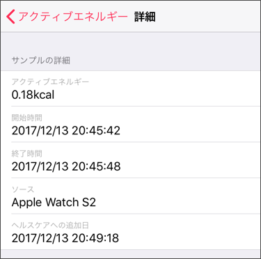

アクティブカロリーは、Apple Watchが算出し、Apple ヘルスケアに登録しています。
ZonesアプリがApple ヘルスケアに登録されたアクティブカロリーを収集するには、アクセス許可が必要です。
Apple ヘルスケアへの権限を確認してください。
ワークアウトを開始後、最初のアクティブカロリーが算出されるまでに1分程度かかる場合があります。
通常であれば、6秒程度でヘルスケアへの登録が行われますが、
まれに登録が遅れ、ワークアウト測定中に収集できない場合があります。
その場合、アクティブカロリーの表示が「--」(登録なし)と表示されたり、少ない値になります。
ワークアウトの編集画面にて、データの再収集ができます。
アクティブカロリーや距離が間違っているを参考にしてください。
Appleの「ヘルスケア」アプリで、実際に登録されているサンプルデータの詳細を確認することができます。

上記の場合、20:45:42 から 20:45:48 のデータになりますが、ヘルスケアに追加されたのは3分後の20:49:18になっています。
もし、3分以内のワークアウトだった場合は、この情報は登録できなかったことになります。
このデータの登録は、Apple Watch(watchOS)が行っているため、OSのバージョンアップなどにより改善する可能性があります。
(Zonesアプリには依存しません)